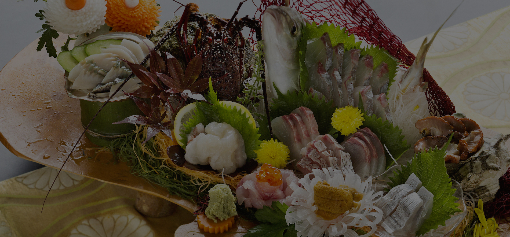
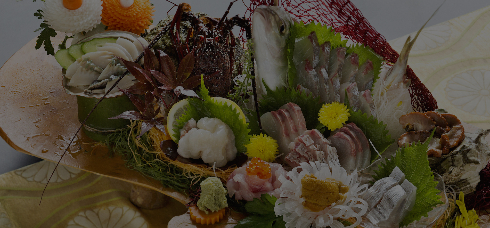

お料理Meal

南房総産の『その日採れた旨い魚』を料理長が季節ごとに旬の魚を料理して提供いたします。
お料理Meal
地元産にこだわった
贅沢な割烹料理の技と味
お料理は旬の食材を活かした海鮮割烹料理です。 目の前に房総の海が広がるこのロケーションを生かし、素材はすべて近郊の市場より毎朝直送。 既製品を一切使用しておらず、一品一品すべてに心を込めた、 手作り割烹料理をお楽しみ頂いております。 小さな宿だからこそできる、大量では出せない手作りの技と味、 そして割烹料理の「心」を味わってください。 お食事はお部屋でごゆっくりどうぞ。
南房総産の『その日採れた旨い魚』を料理長が季節ごとに旬の魚を料理して提供いたします。

お越しいただく皆様に
「美味しかったよ ごちそうさま」と 言っていただけるよう、
心をこめて調理致しております。
お食事をゆっくりお楽しみいただき
「お腹いっぱい」の 満腹感とともに
旅の醍醐味を感じていただければ幸いでございます。
昔ながらの手作りの味をまもり
これからも、なお一層の精進をしてまいります。
末永くご愛顧のほど、よろしくお願い申し上げます。
料理長 渡辺利雄
房総の海と里自然の恵み
食材の旨味と匠の技でおもてなし


※季節やその日の水揚げにより、メニュー内容は変わります。